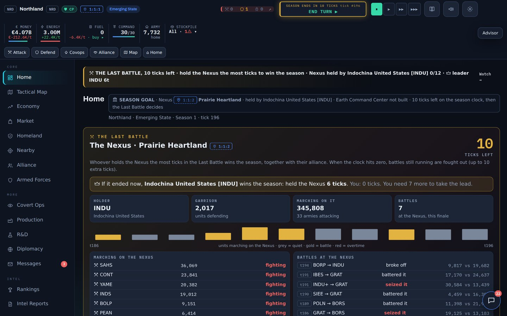
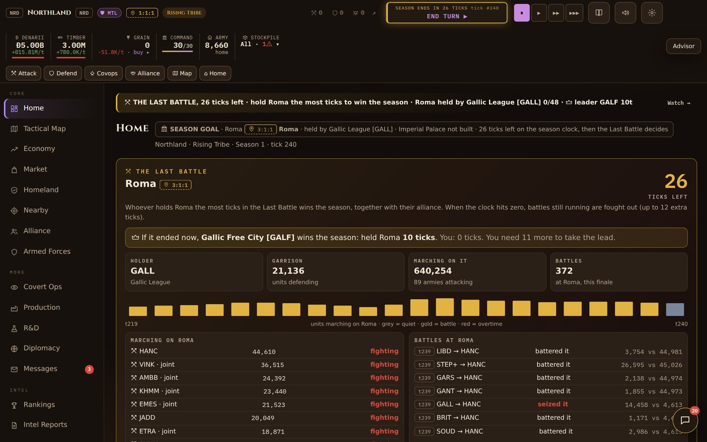
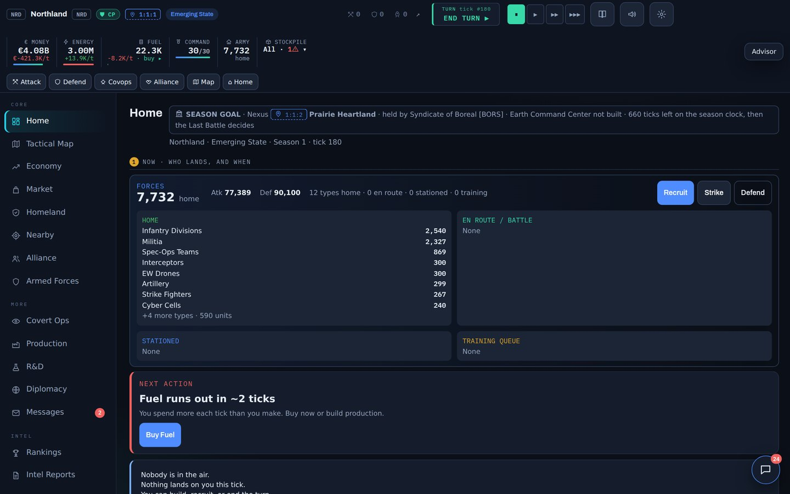
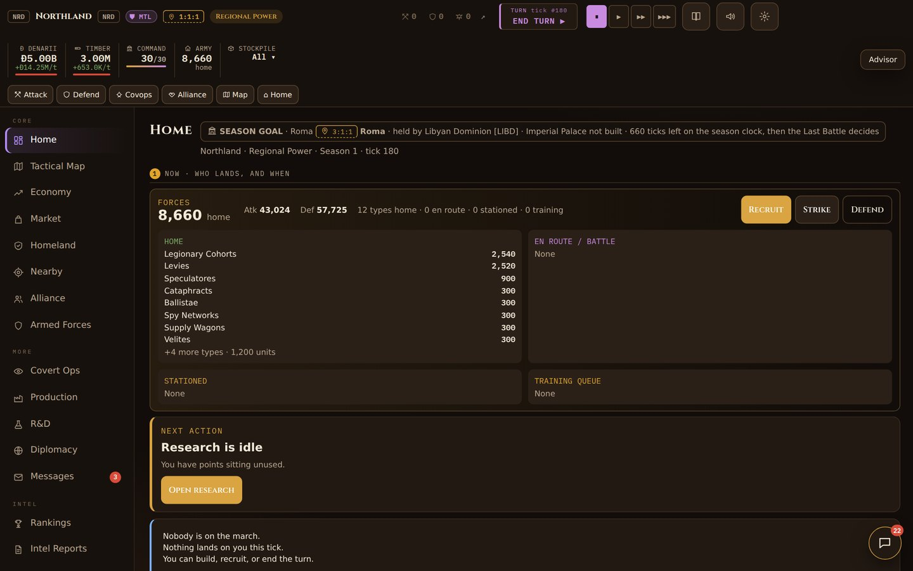

Every notice has its button, every thing has one place, and the shortcuts you missed are back. Earlier updates are below.
For Terrastate, Romaterra and Ironfront. A new player played a season and told us where the screen said one thing and the game did another. All of it is fixed here.
Beginner protection, a raised shield, a last land with its one-time emergency shield, or an ally whose larger army takes the land: the report names the reason and what to do next. The attack window warns you before you march.
The attack window offers Attack with half, three quarters or everything, and only the choices that your scout report says will take the land. The rest of your army stays home.
The attack buttons, the Calculator and the attack itself now use the same estimate from your scout report. No more button that says attack while the order is refused.
An incoming army is called overwhelming only when the battle maths, your army and ground included, say so. Overview shows a battle on your land as an attack, not as safety. A battle that turns in the last round says what changed.
The rule is about the land: nations cannot attack each other inside their own home sector. Lands outside it are open, both ways. The attack window says so.
They count only the armies that land together, turn back when the land they marched on was taken by someone stronger, and order the retreat from a hopeless battle with the same order you have. Hopeless full battles between nations dropped from about half to about one in ten.
Renew a pact where your neighbours are listed, with the turns left shown. Your influence and its income stand next to the pact offer. A few messages that named the wrong side or the wrong screen were corrected.
For Terrastate, Romaterra and Ironfront.
Folded, the turn report is now one slim line: on a phone it sits on the menu bar, on a computer in the empty strip under the page. It no longer lies over buttons. Tap it to open it as before.
The More menu now says Messages, the same name as the tab it opens.
For Terrastate, Romaterra and Ironfront. We looked at how the great strategy games make their computer nations feel alive, and built our own version: no hidden numbers, no extra troops for the computer, every reason shown with something you can do about it.
Until now a computer nation could only think worse of you. Now it also remembers when you helped it hold a land, traded with it, kept a pact to the end or threw back its army. Army › Defend a land shows, for every neighbour that has an opinion of you, its trust, its grudge and the reasons, with Make amends or Offer a pact right next to them.
The nations of your theater talk. Taking land and breaking pacts gives you a bad name there: neighbours refuse pacts and deals, and more of them join the pressure on you. Helping a neighbour hold and keeping pacts gives you a good name. It fades back to neutral over time.
The pressure on a leading nation no longer comes on a fixed clock. It builds while you lead undisturbed, you get a warning before it turns into armies, and after you lose a land you get a few quiet turns. The computer never gets extra troops or resources for it.
The defender never strikes a nation first, and hits back when its walls hold. The opportunist strikes the nation whose army has marched away. Traders and diplomats come to their neighbours with deals and pacts. The attack window tells you which type owns the land.
Half of all computer attacks used to land on a defence far stronger than they expected, because the target's army came home while they marched. Now a computer general looks again on the last turn a recall is allowed and turns back, under the same rule as you. A weak nation with a grudge against you that cannot win now asks for peace itself; accept and the old grudge is laid to rest.
The pressure on a leading nation had silently stopped in 21.8.6. It works again.
For Terrastate, Romaterra and Ironfront.
Computer nations with full stores now sell part of their surplus when the price is above normal, with the same market rules as you. Food no longer sits at the price ceiling while the world has more than enough.
When your treasury is empty and you still run a deficit, up to 5% of your troops desert each turn and stability drops. Events tells you how many left. The same rule holds for every nation.
For Terrastate, Romaterra and Ironfront.
Put up to 12 lands on your watch list from any coordinate. Army › Targets shows them turn by turn: owner, defence where you scouted, score, and how both moved over the last 5 turns. Events tells you when a watched land changes hands or gets much weaker.
Type 1:2 in the coordinate field, or pick Whole sector on any coordinate: every land of that sector in one table with owner, alliance, score, lands, defence and travel time. Tap a column to sort.
A coordinate in the news, a report or a message opens the same menu everywhere: Attack, Scout, Calculator, Watch, Whole sector and Show on the map.
Play now starts on Veteran, the standard game. Recruit is still there for whoever wants a gentle season.
For Terrastate, Romaterra and Ironfront.
Every Army tab has a field for a coordinate. Type 1:2:7 to see that land with Attack, Scout, Calculator, Spy and Map, or 1:2 to list a whole sector. Enter does what the tab is for: Targets attacks, Scout scouts, Calculator fills in the battle.
The last six coordinates you used stay under the field, one tap away.
In an alliance, the Alliance page has the same field, with Mark for alliance and Attack with alliance.
For Terrastate, Romaterra and Ironfront.
When you lead the world and no single neighbour can beat you, up to three of them now strike the same land in the same turn. They only do it when their combined battle maths say they win, and you get a warning with the land and the names. Not on Recruit.
Plan it and Calculator now open with your army at home and, for empty land, the garrison you would face.
The Nexus row says what the Earth Command Center costs and how many turns it takes to build.
A symbol on a chevron or a cross had the same colour as the ground below it. It now always stands out.
The Nexus row says your attack counts your whole army, home and away. After taking land, the shortage message no longer shows a number that differs from the top bar. The turn counter never shows "tick" again.
For Terrastate, Romaterra and Ironfront.
Money piling up in the treasury? Build › Troops can hire mercenaries (auxiliaries in Romaterra): troops at once, outside the training queue, for three times the price, once every 10 turns.
When you lead the world, nearby nations strike your weakest land more often and harder, and alliances hunt any of your lands, not only far ones. Only when a real battle calculation says they can win, and always with the same rules as you.
A new land that could not pay for its planned buildings tries again every turn for 10 turns.
Many battle reports at one place fold after the first two. The Army tile in the top bar no longer opens the resource sheet over END TURN.
Troops trained for Take it march there first instead of to your rally point. Convoy raids need a real war or an army on the march, and only nations with a shipyard sink convoys.
For Terrastate, Romaterra and Ironfront.
When the troops for a land would take longer to train than the time you have, Take it buys nothing and tells you how long it would take and which building trains faster. A land that is already yours says so.
Attack now in the attack window and on the Nexus row sends your army at once. When the battle maths say you would lose, it sends nothing and tells you why. Every choice in the attack window closes it.
What auto-buy will spend shows in the money forecast, and what it bought shows in Events.
The ground now counts in the defence shown for empty land too. Selling a huge stock in pieces in one turn fetches the same lower price as one big sale. Peace you bought also keeps that nation out of joint attacks on you. A paid attack gives half back when the target falls first.
Rank arrows say since which turn, spy reports say what was taken, Romaterra export offers pay in denarii, and old names (War tab, R&D, Home) now match the menu.
For Terrastate, Romaterra and Ironfront.
Every region has its ground: mountains, forest, cities, coast or open ground. Mountains and cities slow tanks, forest hides the defender from aircraft, open ground helps the attacker. You see it on the map and in the attack window, and the Calculator counts it exactly like the real battle.
On Build, press Copy this land: every land you take after that starts the same buildings by itself when you can pay.
Crown, Shield, Swords and Tower: earn them with achievements and they stay yours in every season and all three games. Tap your flag to use them.
The Conflict map now colours lands where your scouts saw an army: purple when it is stronger than your attack, grey-purple when you can beat it.
When your training queue runs many turns, Build shows how many troops your country trains per turn and which building raises it.
Overview tells you when money sits idle in the treasury, with a button to put it to work.
The browser Back button now also returns to the tab you were on.
Take it no longer sends a second army while one is being trained or on its way, peace you bought also turns back armies already marching, peace costs more the stronger the attack and the more deals you made lately (at most 2 at a time, never over the prize of the season), Pay a nation to attack shows its full name, a huge sale on the market fetches a lower average price, and the world wonders sit under Buildings only.
When an army lands on your land, Overview, Army and the top bar show the fight round by round until the battle report arrives.
Long lines that crossed the whole tree are gone. Each research still shows what it needs.
A closed share bar stays closed, old menu names (War) now say Army, and the war game explains that its garrison is sized to your army.
For Terrastate, Romaterra and Ironfront.
After reloading the page or coming back later, your commanders kept their experience and the members you unlocked. Before, they started from zero again.
When your training queue runs many turns, Build shows how many troops your country trains per turn and which building raises it, with a Build button. A long queue folds away.
In a browser without the larger save storage, a long season no longer stops saving after about 130 turns.
For Terrastate, Romaterra and Ironfront.
Pick one land on Army, Defend a land, and press Rally here. Every 3 turns new and returning troops march there by themselves; a quarter of your army stays home.
Next to a nation that is coming at you: buy peace for 20 turns (armies already on the way turn back), or pay a neighbour to march on your attacker.
They judge your land by what their scouts saw, so they can be wrong. And a nation set on you may send a small army at one land to pull your defence away, then strike a weaker one.
Computer allies now send their fast troops when the whole army would arrive after the battle.
Steal research points, or put the enemy's strongest commander out of action for 6 turns.
Beat a small nation and make it a client kingdom: it pays you 15% of its income every turn and you leave each other alone. If it grows strong again, it may break free.
In wartime enemy U-boats can sink a trade route for 3 turns. Escort your convoys, or raid the enemy's from your Shipyard.
A target too strong to take head-on shows you the ways round it: sabotage, heavier troops, a joint attack.
An army waiting outside the Nexus, Roma or the Capital Sector says waits on the map, and Watch the battle opens on top again.
How experienced players win, linked from the Field manual.
The browser Back button goes to the previous page of the game, one click is one scout or one attack, founding an alliance asks for a name and shows the cost, the commander feed shows the newest news, and the rank is the same on every screen.
For Terrastate, Romaterra and Ironfront.
The Def. lost column fits on the screen again, and a battle on open ground now shows what the defender loses too.
For Terrastate, Romaterra and Ironfront.
Armies on the map now count down each turn and disappear when they arrive, without reloading. Your zoom and position stay where they were.
For Terrastate, Romaterra and Ironfront.
On a phone, every button, coordinate and link on the main pages is now at least 40 pixels high, so you hit what you mean.
Soft ambient sound while you play. Off by default; switch it on in Settings.
For Terrastate, Romaterra and Ironfront.
Alliance HQ shows what your computer allies did in the last 3 turns: built, trained, researched, scouted, attacked, donated.
An attack that would arrive after the season ends is stopped, with the reason. Joint attack targets show it before you click.
At war, Defend a land shows your lands that share a region with the enemy, with their coordinates.
In the Alliances view of the map, a gold border marks a sector an alliance controls.
When your treasury is empty you get a report: how many troops deserted and how much stability you lost.
A coordinate shows at most three times per screen.
For Terrastate, Romaterra and Ironfront.
Hold 7 of the 12 lands in a sector with your alliance and you control it: every member with land there gets +3% money and influence per sector, up to +15%. Gaining or losing a sector is news, with its coordinate. Overview shows how many your side controls.
When you have scouted the enemy army, Armed Forces offers a button that trains the counter unit, with the number and cost already filled in.
The full screens War and Homeland are now called War planner and Home defence, and sit next to Targets and Defend a land.
They keep part of their army at home, so they no longer leave their land empty. A nation without land leaves the game. Computer alliances research along their doctrine.
For Terrastate, Romaterra and Ironfront.
One page with what needs you now: allies under attack, S.O.S. calls, joint attacks to join, the alliance target, the Nexus, pacts and offers, and world news. Every line has its button.
Offer a non-aggression pact for 7, 14 or 30 turns, or a full alliance. Breaking a pact is news, and it costs your alliance its reliability.
Scout reports show what they mean: weak defence, army abroad, shield up. Mark a land for your alliance and everyone sees it. Computer allies mark targets too and strike them.
Dossiers on the top alliances: members, strength, reliability, doctrine, pacts and wars. It fills up as you and your allies scout.
Five paths: Warfare, Defence, Intelligence, Diplomacy and Economy. Twelve new techs give alliance power: stronger joint attacks, cheaper scouting, a spy network, shared scout reports, money and defence from pacts. The page advises a path and shows which path nobody in your alliance covers yet.
Computer alliances each follow a doctrine: war, spies, diplomacy or defence. You see it in their dossier.
Armed Forces shows what your attack means: your world rank, how it compares to the next land and the Nexus, your alliance's army, and what to build against the enemy mix. Army opens with your command priorities.
Empire, alliance and world in three columns, with a short feed of what matters to you.
The full screens no longer flicker when they open, and the page tabs stay visible on every sub-tab.
For Terrastate, Romaterra and Ironfront.
One button where you look for it: on the Nexus row in Overview, in Alliance › Joint attacks (with the Nexus and the best targets ready), in the coordinate menu and on Targets. Officers lead; as a member an officer leads and your army joins. An attack already on the way? Your button joins it.
The full screens now have the same width, colours and boxes as the pages around them.
For Terrastate, Romaterra and Ironfront.
A late-season turn took up to three quarters of a second on a test machine, now about a third. A map of who lives where was rebuilt 150 times per turn; now once.
They raise the Planetary Shield in a deep siege, scan what comes at them, hold the line on bunkers, build a covert centre, train agents, sweep for spies and run recon and sabotage, keep a staff of commanders, research repeat techs, send convoys to allies under attack and set their readiness.
Text cards in the full screens now carry the button that follows from them.
Calculator on the defence page opens with the armies you scanned, the defenders on the land and the help that arrives in time. Plan it on the Nexus opens with your army against your scouting report.
The old menu of full screens is gone from the side menu and the phone menu: every full screen is a tab on its page. Phone and computer show the same short menu.
Armies that arrive within the 3-turn battle still count. Garrisons that arrive later say they stay to guard the land.
For Terrastate, Romaterra and Ironfront.
Alliance has a Defence tab. For every member under attack: the incoming armies in red with their ETA and coordinates, the defence on the way in green, scout info per attacker, and the sum: does the land hold or how short is it. Help, Defend and Calculator sit right there.
Overview always shows the Nexus with its coordinate and the next step: scout it, take it, build the Command Center, or defend it. When someone else is about to win, it turns red.
Computer nations stop piling on one land once the attack is already more than enough. Holding the Nexus is hard, not hopeless.
Trade, pact and intel offers in Messages have their buttons.
For Terrastate, Romaterra and Ironfront. Every notice now has its button, and every thing has one place.
An attack now lists where the attackers come from as coordinates, strongest first. Tap one to scout, attack or see it on the map. Army can scan their troops or scout their home in one tap.
The full screens (Research tree, Covert ops, Homeland, Comms and more) are now tabs on their page, next to the other tabs. Open one and the tab row stays, so you are never lost.
When you are attacked, Army shows every attacker: their attack, how many troops, when they land, and what they send once you scan them. The Planetary Shield is now a step in the plan.
An attack on you stands at the top of Overview with one Defend button. The full defence plan is on Army. Lands no longer has a second list of attacks.
One button in the top bar shows how your nation stands and at most three things that need you, each with the button that takes you there.
Market, Reports, Scouting, Comms, Diplomacy and Staff are under More again, and open the right tab. Alliance has a War room tab.
Alliances gives every alliance its own colour, so the big blocs stand out. Intel shows where your scouting is fresh, old or missing.
A building that would drive a resource below zero says so before you build it.
Rankings say where the nation above you leads. Log lines that point somewhere have a link. The turn report starts folded. One garrison per land, and a few hidden errors fixed.
For Terrastate, Romaterra and Ironfront.
An attack on one of your lands shows numbered steps: bring your armies back, send from home, ask your alliance, hold the line, train. Each step says what it adds, and you see when the land holds.
Ask your alliance for help in one tap from the plan. Allies who can be there in time send troops.
Alliance shows which allies are under attack, how short they are, and a Help button when your troops can be there in time.
When a land cannot be held, the plan says so and offers to pull your troops out. Targets show how much attack you still need, and station buttons show what they add.
Tap a battle under Last battles to read its report or watch it.
The full screens behind All options now have the same look as the other pages, with their blocks as tabs side by side.
For Terrastate, Romaterra and Ironfront. The computer nations race for the wonders too.
Great Library, Colossus, Great Granary, Great Harbour and Iron Citadel. Each can stand only once in the world per season. You find them at the bottom of Build.
A wonder costs a lot and takes 12 turns, on the land you have chosen under Build. You build one at a time. Who takes the land, takes the wonder. A new season starts with all five free again.
More research, more money or more food for the owner. The Great Harbour gives one extra trade route. The Iron Citadel makes its land defend with 50% more.
Your army earns experience from battles: Seasoned, Veteran and Elite, each with more attack and a little more defence. Won battles add experience, lost battles cost it. Army shows your rank and how far the next one is.
For Terrastate, Romaterra and Ironfront. Both show on the building's row under Build. The computer nations use them too.
Every Shipyard level opens one route to a nation that is not at war with your alliance. A route brings money and influence each turn, more the further it reaches. A war, or a partner that is gone, ends it.
A Deep Mine gives full output for 40 turns, then less and less, down to half. Its row shows how worn the vein is.
When a vein wears out, Survey finds a fresh one. It costs money and the mine stands still for 2 turns, then it gives full output again.
Now and then a rich vein turns up at one of your mines: 50% more output for 20 turns.
For Terrastate, Romaterra and Ironfront. What you make in surplus now has buyers.
Every 20 turns or so a nearby nation asks for something you make more of than you use. It pays 30% above the market price, plus influence. The offer waits 4 turns on Overview: Accept or Decline.
An accepted contract shows how many turns are left and how much you have. Deliver it with one button. Two turns before the end you get a reminder.
Too late costs a fine of a fifth of the price, and the buyer remembers it. A delivered contract is remembered too, in a good way.
At most two offers or contracts run at the same time, and nations that are at war with your alliance do not ask.
For Terrastate, Romaterra and Ironfront. Each national path building has one order, with a Start button on its row under Build. After an order the building rests for a while. The computer nations use the same orders.
Heavy Industrial Complex: for 6 turns troops cost 25% less, while steel and electronics drop by 30%.
Renewable Grid: 6 turns of double energy from your grids, then 6 turns of none. Time it for when you need the power.
Advanced Research Campus: put in 3 turns of research. Two times in three you get 8 turns back; otherwise it is lost.
Fortress Network: for 150 influence, every army marching to your lands arrives one turn later for the next 6 turns.
Trade Hub: for 6 turns you buy 10% cheaper and sell 10% dearer on the market.
Data Haven: sell what you know about a rival to a neighbour, for money and influence.
Industrial Automation, Renewable Energy, Supply Chain and Modern Armor give half of their old bonus. Automation now unlocks the production line. This counts for every nation.
For Terrastate, Romaterra and Ironfront. Five buildings now have a choice on their row under Build. The computer nations use the same choices.
The Bunker Network always showed in the defence of a land, but did not count in the fight itself. Now it does: each level adds its defence in the battle and in the defence calculator.
When a land with bunkers is under attack, Lands shows Hold the line: for 100 influence its bunkers count double for 3 turns. After that the bunkers rest for a while.
With Industrial Automation you choose what your Factory Complexes make: electronics, steel, or munitions, which makes troops 20% cheaper. Switching stops the factories for one turn.
Your Power Plant decides what happens when energy is about to run out: Production keeps industry running and stability drops, Peace pauses your factories so the lights stay on.
Your Military Base can stand Normal, in Training (troops 15% cheaper), or Ready: a land outside your home sector that is attacked gets a fifth of your home army sent to it at once.
Every 24 turns your Agro Complexes bring in a harvest. Store it, sell it, or give it to a neighbour, who remembers it. If you do not choose, it is stored after 6 turns.
For Terrastate, Romaterra and Ironfront. The rankings work again, you see your goal and your rank on Overview, and the computer nations now race you for land.
Names, tags and real scores, in three tabs: Nations, Alliances and Around you. Arrows show who climbed and who dropped. Around you says how many points you need for the next place.
One line with the season goal and who holds the prize now, one line with your rank and your alliance's rank. Tap it to open Rankings.
They build their path building, their doctrine building and the buildings that fit their character: bunkers, radar, silos, shipyards and more. Expanding nations take empty land early, so there is a real race for land. Your three starting lands stay yours to take.
The field training sits on top of Overview with the right button. Take it only shows when your army is strong enough; otherwise Train first trains what is missing and marches when the troops are ready.
When your treasury or your storage is almost full, Overview says so, with a button to spend it. Buying with Max now fits your storage.
Fewer menus. Army now holds scouting, the battle calculator, battle reports and your staff. Lands has a map of your lands: tap one to station troops or build. Economy is in the main menu with the market, auto-buy and auto-sell, tax and government. Alliance holds diplomacy, roles and messages.
Switch it on under Economy: each turn the game sells what is above 90% of your storage, so nothing above the cap is lost. A resource you run short of keeps 10 turns of reserve.
Each page ends with All options, which opens its full screen: the battle calculator, the war planner, the shield, readiness, standing orders, limit orders, charters, declaring war, the forum and every alliance setting. More lists them all, every full screen now has the same look as the other pages, and every alliance role can be given again.
A row of tabs that does not fit wraps to a second line. On a phone a long row, like the Field manual, is a drop-down, so every topic name can be read.
The season end shows the winner and your place. Your rival stays close to you in the ranking. Comms shows who wrote. The turn number is on top on a phone. Your saves keep working.
For Terrastate, Romaterra and Ironfront. Finding the right button took too long. Now every page shows only what it is for, and the button sits on the row.
Overview, Army, Lands, Build, Research and Alliance. Everything else is under More, and the full screens from before are still there.
Army shows each army on the move with Recall, Retreat, Press on, Leave or Call off on its own row. Targets and defending a land are on the same page.
A land you just took is marked NEW, on Overview and on Lands, with Station troops right next to it.
Attacks on you with a Defend button, new lands without troops, resources that run out, and your next land. Nothing else.
A double click on END TURN no longer plays two turns. A new season now starts with a clean world. Your saves keep working.
For Terrastate, Romaterra and Ironfront. What the games already knew, you now see: armies moving over the map, every battle as a short replay, and the paper of the turn on Home.
Every army on the move has its own marker that moves along its route after each turn. Armies coming for you turn red, and pulse when they arrive next turn. Tap one to see who, where and when, with a button to the battle calculator.
Every battle report has a Watch button: two lines, three rounds, losses per unit type as they happen, and the outcome. It shows exactly what happened, because battles have no dice since 16.0. The biggest battles, for your capital or the prize of the world, open by themselves once.
Home opens with the story of the turn: the biggest capture or defence on top, then a few more lines, written from what really happened. Each world has its own: World Wire, Acta Diurna and Front Dispatch. Earlier editions are one tap away.
END TURN and the side menu now work with a keyboard and screen readers. Animations follow the Animations setting and your system setting for less motion.
For Terrastate, Romaterra and Ironfront. The computer nations think before they strike, remember what every nation did to them, and each have a character of their own. They still only do what a player can do.
Before a computer nation attacks, it asks itself two things: is there a reason, and does the battle calculation say it wins? No reason, or a losing sum, and it stays home. Fewer pointless battles, sharper enemies.
Every nation remembers who took its land, who attacked it and who stood beside it, for each player and for each other. Help raises trust, an attack lowers it.
A nation that was hurt goes back for it when the sum says it can. A nation that trusts another does not strike it without a reason. That makes friendships, feuds and payback between computer nations.
The Diplomacy screen shows each neighbour's character in plain words (bold, careful, loyal, hot-headed and more), how much they trust you and what they remember of you.
Empty and repeated blocks are gone: a quiet Home stays quiet, the staff list shows the next commander of each role, the market shows stock once, and long lists of allied waves fold to two lines.
For Terrastate, Romaterra and Ironfront. Like the classic tick-based games: no dice in battle. The same battle always ends the same way, so you can work out exactly what you need to take a region or to hold it.
The luck factor in battle is gone. Attack, defence, ground, formations, air wings and fatigue decide, nothing else.
A new Calc tab under War. Pick a scouted region or an army that is coming for you, and see each tick, the losses per unit type and the outcome. It also works out what it takes: how many more of which unit to take the region, or to hold it.
A successful scouting report now shows the exact defending army, not a range. The fresher the report, the more you can rely on it.
The real battle, the forecasts in the war planner, the computer nations and the calculator all use the same calculation. In Ironfront only the battle orders are a guess: the calculator shows even, best and worst.
The battle calculator runs in the browser with the same engine as the games, so you can plan away from the game too.
For Terrastate, Romaterra and Ironfront. Three new layers: a staff of commanders who grow with you, alliance titles that each do something, and a story told in ten chapters.
You start each season with six. The others you unlock during the season with deeds: taking land, holding off attacks, finishing research or growing your realm. Every season starts fresh, for everyone.
Commanders in your staff gain experience every turn and in battle. At rank 10, 25, 50, 75 and 100 you choose one of two traits, so the same commander can play differently each season.
Every commander has an order with a cooldown, such as Offensive, Hold the Line, War Chest or Eureka. Your staff starts with two places and grows to five.
Leader, officer, diplomat, recruiter, quartermaster and spymaster. Doctrines and a Rally Call, musters, envoys and trade deals, recruitment drives, aid from the treasury and early warnings.
A computer nation with a title carries it out: officers call musters, diplomats send envoys and sign trade deals, recruiters bring in new members.
Ten chapters per world, each a short level with its own goal and up to three stars. A commander tells each chapter and joins your staff.
For Terrastate, Romaterra and Ironfront. Home is your war board. Every turn is about attack, defence, scouting, growing and your alliance. No ready-made targets: you find them by scouting.
Home, Map, War, Build, R&D and Alliance. Screens that belong together are tabs, like Attack, Defend, Scout and Reports under War.
Scout a target, pick your force and the battle engine shows the odds: capture, hold the field or be repelled, and the losses on both sides.
Allies under attack with one Defend button, joint strikes with one Join button, and every member with their strength.
Units as tiles with what they beat and what beats them, buildings as tiles with one Build button.
Radar, deception and siegecraft. Decoys fool enemy scouts, sappers break the defender's ground bonus.
Computer nations scout before they strike, and an ally always answers when you are attacked.
For Terrastate, Romaterra and Ironfront. Attack and defence follow the classic tick game again: fleets in the air, ETA in turns, and you make every call.
Each fleet coming for you is on Home and Homeland with its ETA, small ones too. An attack your defence will hold is green, but Defend and Scan stay right there.
Homeland opens the list of individual fleets per region, so you see who comes, how strong, and when.
The top bar shows your capital coordinates and the counters for incoming, defending and outgoing fleets, also at zero.
Fleets no longer turn back by themselves. When your target changes hands while you are in the air, you get a warning with the ETA and choose Recall or Keep going. In the last turn before impact the assault is committed.
For Terrastate, Romaterra and Ironfront. We played the first hour again as a new player and asked of every button, line and screen: does it help you right now? What did not, is gone, folded away or comes later.
Your goal in one line, the next land you can take, and danger only when an attack would break through. Everything else waits under More on Home.
No tag, no coordinate, no empty counters. The speed buttons appear after turn 20.
Market, Covert Ops and Comms join the menu after turn 40. Every screen lost its explainer sentence, and the field training card only shows where its task is.
Take land, start a research, queue a building. Take it already trains your troops.
An army sent to empty land turns back when another nation takes that land first.
Your first captured land of a season pays double. Choice events wait until turn 40.
For Terrastate, Romaterra and Ironfront. After the first few regions, players could get stuck for a long time without knowing what to do. Now there is always a next step.
Home shows the next land you can take: how strong it is, how strong you are, and one button. Take it trains the troops you are missing and marches as soon as they are ready. Land held by another nation is scouted first.
After the three starter regions, the next empty regions near you step up in strength bit by bit, so there is always a target within reach.
When an attack is coming, it moves to the top of Home. Other advice folds away under More advice.
A new season length of 80 turns, one evening. New players start with it. The beginner shield lasts 16 turns there.
A second title at the end of every season, for the nation with the most land in your part of the world. Home shows whether it is yours.
If you do not finish the field training, it closes after 20 turns and every menu opens.
For Terrastate, Romaterra and Ironfront. The first hour was a lot of reading and not much playing. This update changes that.
Three empty regions next to your homeland are lightly guarded. The first training task is to send your army and take one. Follow the training and you hold a second region after about five turns.
Home, the map, Nearby, Armed Forces, Production and R&D. The other menus sit under More menus, one click away.
No more empty message after every turn and no pop-up every twenty turns. Wars and pacts far away are folded into one short line.
Computer nations send fewer messages without a reason. When one writes to you, it is worth reading.
Nations act instead of talk. No more invented forum posts and chatter. Wars last, a peace holds for a while, and five alliances no longer pile onto one target in a single turn.
A short list on Home shows what really happens in your part of the world: who marches where, who called off an attack or pulled back, who took land, who went to war, made peace or signed a pact.
Choice events come about every fifteen to twenty turns instead of every six to ten. Your rival is replaced by a new one when they fall.
Shorter texts in the first minutes, a season goal in one plain sentence, one word for one thing (a turn), and the beginner shield says clearly that taking empty land does not break it.
For Terrastate, Romaterra and Ironfront. We kept playing whole seasons as different kinds of players and fixed what still felt off.
Militia beyond twice your other troops cost extra upkeep, up to three times as much. A big home guard stays possible, a militia-only empire gets expensive.
A computer nation now only leads or joins a joint alliance strike when the alliance together can break the target.
On Veteran and Warlord the spies of your rival alliance may also act between strikes. Watch posts and an intelligence office make that harder.
The Field Manual has new pages on the home guard, the rival alliance and how computer generals decide, and explains the calmer auto-play.
A daily order with a small reward, and a world that starts with more empty land for newcomers.
Small border probes from your neighbours are back, text about unclaimed land reads correctly again, and the Home card about the prize names the right prize in every game.
For Terrastate, Romaterra and Ironfront. We counted every battle the computer nations fought: a quarter of their attacks failed, and those failures cost more than half of all the troops they lost.
A computer nation now calls off an attack when its force would not break the defence. Their armies last longer and the world around you stays strong.
When your army is mostly militia, the next-step advice tells you that militia guard your home best and that a conquering army needs other troops.
Auto-play now runs one turn every 1, 5 or 15 minutes instead of racing through turns. You can still press END TURN whenever you are ready.
In the live world, where a turn takes an hour, Home shows what you can line up for the hours you are away: builds, research and standing orders.
For Terrastate, Romaterra and Ironfront. We played whole seasons as an expert, a normal player, a careless player and a player who does strange things, and checked how a live world with one turn per hour feels. This update comes from what we saw.
Militia stay the cheapest defence. In an attack, militia beyond the number of your other troops fight at a quarter of their strength, so a conquering army needs real troops. The same rule holds for every nation.
They raise taxes in calm times and lower them when unrest grows, change their national charter when war comes or ends, and their alliances save up for wonders.
A new standing order claims empty regions in your own theater when your army clearly wins. Only empty land, never a nation, one claim at a time.
We sent every command thousands of strange values and fixed the two that could stop with an error.
For Terrastate, Romaterra and Ironfront. We measured whole seasons and saw that computer alliances acted like loose groups: a joint assault was only ever one nation's fleet, and their treasuries sat unused. This update makes them act as a team. We also ran a full check of all three games on phone and desktop.
Members of a computer alliance now join the assaults their alliance plans, up to five fleets, instead of leaving one nation to fight alone.
A computer alliance now hands part of its treasury to the members who fight or stand weakest, and they turn it into troops. An alliance with a human player in it keeps the treasury as it was.
A nation that clearly leads the world now draws strikes from whole alliances, when they can actually break one of its far regions together.
In single player on Veteran and Warlord, one strong alliance names you its rival. When its members together can break one of your far regions, they strike as one, and its spies may take your radar and power down just before. On Recruit nobody hunts you.
For Terrastate, Romaterra and Ironfront. We played whole seasons as a new player and saw that the computer nations stayed far too weak. This update gives them real armies, makes a sprawling empire harder to hold and makes the start calmer.
A computer nation that sits on a full treasury now turns part of it into troops, on Recruit a little, on Warlord more. Before, a rich computer nation could hold a fortune and a tiny army.
Your home army only partly reaches regions far from home, and less so the more far regions you hold. A sprawling empire has to station garrisons where it matters. The same rule holds for every nation.
The nation that holds clearly more ground than anyone else becomes the front-runner. Its neighbours look at its far regions first, and you hear about it when that is you.
After Field Training, Home now shows one next step instead of five. When you are one of the three biggest nations, a card tells you that the season is won at the prize. The practice battle and the battle report read more clearly.
For Terrastate, Romaterra and Ironfront. A battle is now something you prepare, not only something you launch. Each game does it in its own way.
An army that fought in the last six turns hits softer, and a tired defender holds worse. A turn or two of rest gives the edge back, so the timing of your strikes matters. The battle report shows it.
A scout report ages. Scan a region just before your strike lands for the biggest edge; an older report gives less. The launch screen tells you how old your report will be at landing.
The aircraft you keep at home fly support over one battle each turn, attack or defence. You choose where, or let it pick the closest fight. Each sortie costs a few planes.
Pick a formation for attack and for defence: Line, Triple line with far fewer losses, or Wedge, which hits hardest but bleeds most and falls back if the fight turns. You can change it per battle.
Ironfront keeps its own battle orders, field works and weather. It gets fatigue, nothing else changes.
For Terrastate, Romaterra and Ironfront. The world was already busy. Now you see it, without the flood.
The Report page tells you what needs you, what happened at home, what changed next door and what the world is talking about, in at most five lines and with one button. The rest waits under More details, and the turn report keeps only what needs you.
Once a day the paper picks the stories of the day from what really happened: a feud between two nations, a region held against assault after assault, a nation that fell, a power on the rise, an alliance that broke up. The story nearest to you comes first.
Regions near you that changed hands get an orange ring on the map until you have looked, and on the Report you can watch the changes replay on a small map of your theater.
Heavy fighting in a theater pushes some raw materials up a little, with the reason shown when it is next to you. A neighbour that falls can send refugees to your border. Routine news, such as every failed assault on the prize or every new pact, is folded into one line per turn.
For Terrastate, Romaterra and Ironfront. Your AI allies now play like team mates: they join, propose and follow a plan.
Before a joint strike (ACS) the panel shows which allies come and with how many units, your force together against the defence and your odds. It also offers a landing turn that lets more allies join.
AI allies join when the odds are good or the target is the alliance target, also in an alliance led by the computer. They stay home when they defend their own ground or the odds are hopeless, and the panel says why. Half of each ally army stays home.
An ally who sees a weakly held target proposes a joint strike on Home, with Join and Not now. After the landing one line says what happened and who brought what.
When you lead an alliance you pick its target and the AI members focus on it, also at the end of the season. Your S.O.S. gets a real answer with who comes and when, and the alliance chat carries far fewer AI lines: one ordinary line per turn at most.
For Ironfront, the grand strategy game. Terrastate and Romaterra are unchanged.
An army fights best close to your own ground. Attack another sector of the front and it fights 5% weaker, another front 15% weaker. At a Capital Sector the penalty is halved, and supply trucks in your force cancel it. Cut off a defender from the rest of his ground and he fights weaker too. Every battle forecast shows it before you commit.
The war runs through spring, summer, autumn and winter, 40 turns each. Mud slows tanks and artillery, summer favours the air, winter hits aircraft and armour and helps the defender. A new Front Conditions card on Home shows the season, what it does and when it changes.
Your forces now carry names such as "2nd Armoured Division". Every fight earns experience; they gain up to three stars, each worth +4% in battle, and a nickname at the first star. A division that is wiped out is lost, and the Armed Forces screen lists them all.
The AI nations fight under the same supply, weather and pocket rules as you. The Field Manual has a new page that explains all three.
For Terrastate, Romaterra and Ironfront. Each screen now has one subject, and you find a thing in one place only.
Armed Forces is about your army, Production about what you build, Homeland about your defence. Reports tell you what happened, Rankings show the wider world.
Battle reports, armies on the move and tips no longer turn up on two or three screens. Where a screen needs a pointer, it gets one line with a button.
The minister of the economy sits on Economy, the scientist on Research, the envoy on Diplomacy and the spymaster on Covert Ops. Generals stay with the army.
War Room left the menu: it opened Homeland a second time. Chat now lives with your alliance, the world overview with the rankings.
Every world now has a board game of hidden ranks for one opponent: Hidden Command for Terrastate, Veiled Legions for Romaterra and Sealed Orders for Ironfront. Each one plays differently: drones and a jamming zone, a river with three bridges and an Augur, or hedgerows, mines and anti-tank guns.
You set up your army in secret on a 9 by 9 board. The enemy only sees the backs of your pieces; a scout reads weak, medium or strong.
Before the battle you open one of two envelopes. Complete the order for extra points. The enemy has one too, and you only learn it when it is done.
From Recruit to Field Marshal, against commanders with their own character, setups and openings. Or play with two players on one screen.
No rules to read first: short tips explain each rule the moment it matters. You can switch them off.
The alliance role menu opens in the game's own colours and stays on screen, the turn report folds away when you click elsewhere (and starts folded on a phone), and text no longer runs together where a pause used to be.
The training opens the formation buttons on a phone, the goal line names the real target of the battle, the duel hand-over shows the current game, and the daily result line names the whole game.
For Terrastate, Romaterra and Ironfront, and their mini games. We played full seasons on every level and fixed what we found: a quiet middle, a finale that felt like a lottery, too many pop-ups and screens that were hard to use on a phone.
From turn 40, a weak nation can break apart into a handful of lightly held regions that anyone may take for 10 turns. Home shows where, with a timer. Unclaimed land also gets easier to take after turn 60.
Every turn you hold the prize earns a hold point, two in the Last Battle, and the most points wins. From the middle of the season Home shows the top three, your own points and one tap toward the prize. The holder's walls grow with every turn held, and the end screen explains why the winner won.
A nation that runs away with the lead draws a coalition of AI nations that attack in announced waves. On Veteran and Warlord, a rich nation with a weak region can get a demand for tribute. The automatic shield now lowers itself after quiet turns, and Home says when it is up.
No new region for 15 turns? Home names the weakest target in reach, what you are missing and what to build. Full storage shows what is wasted, with a Sell the surplus button, and each era has one way to turn a big treasury into something useful.
The stream of pop-ups is replaced by one report per turn: Turn report in Terrastate, Dispatch from the Senate in Romaterra, Radio bulletin in Ironfront. Repeated attacks on one region become one siege line, and events have their choices right in the report.
Targets and units are cards with big buttons, the turn number sits in the END TURN button, and the bottom bar stays the same on every screen. Late in the season, turns are faster and saves are smaller.
Romaterra now plays on its own map of the Roman world, from Britannia to Parthia, with Roman provinces, real towns and tribes, rivers, and leaders and nations of the period. You start close to Italia.
Ironfront now plays on its own map of Europe in 1944, from Normandy to the Eastern Front, with real towns, period names for nations and leaders, and wording that fits the time.
Saved games open in every era. Starting a new nation asks first and keeps the previous one. The season ends cleanly, once. The end screen counts every region you took and shows your real place. A won fight that does not take the ground is called a stalemate. The war game uses the real strength of nearby land, and no nation starts short of fuel.
Each mini game now links to its grand strategy game. The campaign gets harder step by step, D-Day starts with Training at Slapton Sands and follows the real order of 1944, friend and foe are blue and red, and there is a daily battle that is the same for everyone. The support message shows after your first victory instead of at the start.
Each world now has a short turn-based tactics game on a hex map. Give every unit an order, end the turn, and everyone moves at once. Free, in your browser, and offline once played.
For Terrastate, Romaterra and Ironfront. We went through every screen and asked two questions: what does a player need first, and what is said twice? The answers are in this patch.
Each screen now starts with what you came for. Homeland opens with the attacks on you and the defence you can send, Nearby with your army and the nearest targets, Diplomacy with your own wars and the pacts with your neighbours, Economy with what you make.
Information that was on a screen twice is shown once: the buttons on Home that repeated the menu, a command tile that repeated the top bar, a warning that repeated the next action, a doubled column in Rankings and the small print on research cards.
Background blocks, such as your chronicle, the list of your armies on Reports and the advisor staff in Alliance, fold under More on this screen. One tap opens them.
Nearby shows the 8 nearest targets first, with a button for the rest.
Rankings no longer shows a lone # or a dash when your alliance has no rank or no war record yet.
Your home army defends your home sector in full. Regions further from home get half of it, plus the troops you station there. Guarding new ground pays, and a big empire can be cracked at its edges. Defend on a far region now sends troops in one tap.
Nation and alliance names are cleaned on the server, so in the live world a name is always plain text.
playterrastate.nl opens with real footage of the map, the three eras as image cards, and a new logo.
For Terrastate, Romaterra and Ironfront. A player told us: I just want to send units from my home to my second region to defend it, and the screen was a wall of numbers. So the main moves are now one tap, and before you strike you see what you are walking into.
Homeland and Nearby open with one overview: how many units you have at home and where your armies are, a box to type a coordinate and see who holds it, how strong it is and your chance, and what your alliance is attacking: each joint strike and war goal with who takes part, with how much, and whether it is enough.
Every region you hold, with the troops standing there and its defence, weakest first, and a Top up button for each.
On Homeland, Nearby, Armed Forces and Market the extra blocks fold under More on this screen, so what you need comes first. Home no longer shows the same warning twice, and Quick buy sits right under your stock.
Unclaimed ground no longer says "open ground". The target lists and the launch panel show the strength of the neutral garrison and your chance: you can take it, a coin flip, or too strong for now.
The launch panel offers three forces: enough to take it, half, or everything, each with its chance. One tap fills in the units.
Send an army that will be crushed and the game asks first, with how much more attack you need. Attack a nation you never scouted and it offers a scout first. You can switch both off.
Send a quarter, half or most of your home army to your own ground or an ally, with the defence before and after. The result screen after a capture opens this choice straight away. When your home army already covers a region, the game says so.
Armed Forces has a one-tap army for a quarter or half of your treasury, made of the units that give the most attack and defence for the money.
Unit names and numbers no longer get cut off, and every number field is easy to reach, also on a phone.
The battle result screen is smaller: the result and what to do next first, the full report folded underneath.
For Terrastate, Romaterra and Ironfront. A player told us: I attacked, won, and almost missed it. The report was somewhere at the bottom of a full page, and then: now what? The battles are the heart of the game, so now they get a moment of their own.
When a fight of yours ends, a screen opens by itself: VICTORY or DEFEAT, the region, what it cost both sides, and the full report one tap away.
The result screen says what to do next. Took new ground: send a garrison and calm the unrest, with a button for each. Lost an attack: how much you were short, and a button to plan the next one. Held the line: strike back while their army is away.
For a few turns your latest battle sits on Home, with a button to the result and next steps.
In Reports the battle reports now come right at the top, and the menu shows a dot while there is a report you have not seen.
The Field Manual has a new page about the turns after a battle: why new ground is weak, garrisons, unrest, and taking ground back.
The living world from 7.1 now costs no more time per turn than the world before it, on the server and in your browser.
For Terrastate, Romaterra and Ironfront. We ran whole seasons with only AI nations and looked at what the world did. Wars were declared and ended again within a few turns, often without a single battle, every alliance stayed the same size, and half the nations never joined one. So the AI alliances now act like powers with a plan.
Nations without an alliance join one near them, and strong alliances attract more. Two alliances that sit side by side can unite through the normal merger. So the map now has big alliances and small ones.
The greatest powers gather smaller alliances in allied pacts. You see on Diplomacy who stands together.
When one alliance stays ahead, the next alliances band together against it and strike the same region on the same tick. Once it falls back, the coalition breaks up and yesterday's partners eye each other again. If you lead, that coalition can be against you.
When an alliance is attacked, its allied partners join the war against the attacker.
A nation that is hit remembers who did it and hits back, most of all while the attacker's army is away. Even calm nations answer.
A war is declared to be fought. No new war every few turns, no peace after a few quiet turns, and the members of a warring alliance really attack.
Diplomacy has a new card: the leading alliances with their share of the score, the blocs, a coalition if there is one, the hottest wars and the latest world events.
AI alliances offer pacts less often, say no quietly and set fewer alliance goals. The world shows itself in what it does.
Every move of the AI goes through the same commands and limits as yours. It gets nothing for free.
For Terrastate, Romaterra and Ironfront. We looked at every screen on a laptop and a phone during an attack, counted how often the same attack was mentioned and how far you had to scroll to act, and cleared the desk. Then we looked at how players talk to each other, inside the game and outside it.
When an enemy is coming for your ground, Home shows one Front card: how many attacks, when the first one lands, and your defence against what is coming, in plain words. Defend, Scan and Recall plus shield sit right there. In Ironfront the battle orders are part of the same card.
On other screens an attack is now one short line at the top, with its buttons. The full explanation is one tap away.
Market, research, diplomacy and armed forces open with what they are for. Helpers such as quick buy, the research plan and standing orders sit underneath.
Extra attack panels on Homeland, your armies on the move and the long list of who is coming are folded together, so the decision is on the first screen.
On phones END TURN is the big button in the middle of the bottom bar. It no longer floats over the text. Nearby has moved into More.
A Share button on battle reports and at the end of a season opens WhatsApp, Telegram or Discord with the text ready, plus a picture card of the moment. On phones it uses your own share menu.
Messages is now Comms: your inbox comes first and the world forum has its own tab. Diplomacy is shorter when you play alone.
If you want it: when the game runs in a background tab, your browser can tell you that an attack is on its way. It stays off until you turn it on in Settings.
Officers can add the alliance WhatsApp group, Discord or Telegram. Only members see the links. The leader can send a test message to the alliance Discord or Telegram feed and sees whether it arrived.
Line up to five builds on the Production screen. Each one starts by itself as soon as you can pay for it, also while you are away.
There, your standing orders, research plan and build plan keep running on the server while you sleep or work, so time online matters less. Orders sent at machine-regular times get a friendly human check, convoys between accounts on one connection are switched off, and a public read-only API lets the community build its own tools.
Among others: a season could land twice in the hall of fame after a reload, sharing a battle with your alliance could pick the wrong battle, shared intel gave away an exact defence without scouting, and on phones the chat drawer could cover END TURN.
For Terrastate, Romaterra and Ironfront. We measured how many clicks every task takes and what you can do in one tick, then moved the buttons to where you read the problem.
Warnings on Home, the alert bar on every other screen and the lines in your reports now carry action buttons: Defend, Scan, Pacify, Buy, Start research, Recall. You act where you see the problem.
Defend scans what is coming and tells you what defends the region. In Ironfront it also starts field works. Your home army already defends every region you own, so the game no longer sends it on a trip to a region it already covers.
One button calls your armies home. The shield engages by itself as soon as they are all back.
Off until you switch them on. Bring garrisons home when the threat is over, scan every new attack, pull an attack back below a battle ratio you choose, and pacify unrest. Keep your army at a set size, and line up a research plan.
Every resource on the market has quick-buy buttons. Buying no longer costs a command point. Selling still does.
Scanning an army costs 250 influence (was 400) and scouting a region 200 (was 300). Your influence income grows with every region you hold past your third, up to +75%.
In a solo game you can propose a non-aggression pact to a computer neighbour and renew it before it runs out. A report tells you 3 ticks before a pact ends.
A quiet border now gets a small probe from a computer neighbour now and then: rarely on Recruit, more often on Warlord.
Home opens with one line on the last tick and what is coming. "Later" hides a warning for 12 ticks. Repeat your last recruit order in one press. On a phone the bottom bar has Forces instead of Map. A solo game starts with full command points. In Ironfront a report tells you when a battle-orders window opens.
A world at war in a 1940s style, with invented nations. The same season, alliances and fair AI as Terrastate and Romaterra, with its own prize and its own battle layer. In Ironfront every tick is a decision.
There is not one prize but three. Hold two of them at once with a GHQ Bunker for 12 ticks, alone or as one alliance, or hold one the longest in the Last Battle.
A battle lasts three ticks, and each tick both sides give an order. Assault, Barrage or Flank against Dig in, Counter-attack or Ambush. The side that guesses right gets +25% that tick.
Dig trenches, lay a minefield or pour a bunker on a region an enemy is heading for. Each takes 1, 2 or 3 ticks: a race against the moment they land.
An incoming army first shows as radio traffic, with an estimate of its size. A successful scan shows the real army. Your own attack can be a feint: on weaker radar it looks three times bigger, and it turns back before it lands.
Allied help that is in place when the battle starts counts in full. Help that arrives later counts half. The Front board shows your alliance's fronts, soonest first.
The computer nations give orders, dig in and send feints by the same rules, pay the same costs and see no more than their radar shows.
Your save now lives in a much larger store in your browser. The old storage held about 5 MB for every game on the site together, and a long season came close to that.
The game used to squeeze the whole world into a small package after each order you gave. On a slow phone that took seconds. Now saving takes a fraction of that.
The computer nations weigh their options with less repeated work, so a turn is calculated faster. Nothing about how they decide has changed. In our test on a slowed-down phone, a turn went from about 6.5 to 3.8 seconds, and saving after an order from about 5.5 seconds to 0.2.
When you press END TURN, a "Calculating turn" bar appears straight away, so you can see the game is working.
The first time you open 6.0, your saved game and save slots are copied to the new store. The old copy stays where it was as a reserve. If your browser does not allow the new store, for example in some private windows, the game simply keeps using the old one.
Update 5.0 rewards the commander who plays. Allies march for you when you give orders, the bounty goes to whoever defended, and a full treasury finally has something to build. Warlord plays sharper with the same resources, the comeback bonus is clear and capped, and Home and the phone screen are calmer. Your saved game keeps working.
AI neighbours and alliance mates now send armies to commanders who play. Give an order in the last twelve turns, or keep at least a quarter of the attacking force at home, and they come. An empty capital is on its own, and the game tells you why.
When allied garrisons help you hold a region, the influence and money for the repelled attack are now shared by who actually defended. If they did most of the work, they get most of the bounty.
A full treasury finally has a goal. Three projects per game (Terrastate: World Expo, National Space Program, Grand Monument. Romaterra: Great Library, Triumphal Arch, Colosseum). Each gives influence once and +5% influence production for the rest of the season. Renown only, never military power.
On Warlord, alliance joint strikes come faster and scouts remember what they saw of your army, so the AI picks counter-units. It still gets no extra resources. On Recruit, joint strikes come slower.
The two catch-up bonuses no longer stack without limit. Together they stop at +150% production, and Home shows "Comeback bonus +X%" so you know when it helps you.
One "next action" card on top, with a one-line summary of your army. The unit breakdown lives on Homeland. Around you, the watch on the prize and while you were away are folded under "More on Home".
On phones the header tools hide while you scroll down and come back when you scroll up. The map gets the full screen and opens on your own region. The smallest text on the game screens is now 12 pixels.
Update 4.0 comes in phases, and the first three are here. Phase 1 is about the things that should simply work: your save, your thumb on a phone, and telling a friend about your season. Phase 2 is about your first ten minutes: you learn by doing, and your first battle explains itself. Phase 3 is about the long game: a rival who seeks you out and comes back next season, goals for every phase, and seasons that feel different. Update 4.0 is in Terrastate and Romaterra, and your saved game keeps working.
What you play now is Season 0, the training ground for the live world: the same game, one shared season, with real people as the other nations. It opens when 100 commanders have joined the waitlist on Discord. Everyone who plays Season 0 is marked as a Founding Commander.
Early in every season one nation marks you as its rival. It writes to you, reacts when you climb past it, scouts you and every so often sends an army your way, with a warning first. It uses the same commands and pays the same costs as every other nation, and never touches you during your newbie protection.
At the end of a season your nemesis, the nation you beat most, and your rival are remembered. Next season they return with the same name, flag and character, and they mention what happened last time. They start exactly like every other nation: memory, never a bonus.
A season has five phases. Each one now brings a short goal, from finishing three research projects to sending an army to the prize, with a small influence reward and a phase medal. Reach all five for the Every Phase achievement.
Refugees, arms dealers, scandals, inventors, a defecting general and more. Some choices come back ten or fifteen turns later with a follow-up, and you will not see the same event again until you have seen the rest.
Starting a new season in solo, you can pick an optional rule for the whole world: Cold Peace (no attacks on nations before turn 60), Fast Nexus (the prize wakes early) or Iron Wall (every region defends 25% harder). The same rule applies to every nation.
Between seasons the solo game no longer shows a pretend lobby with a week-long clock. You see your last legacy title, who remembers you, and you choose difficulty, length and the season rule, then start.
Seven new achievements that span seasons: Three Seasons, Many Faces, Podium, Both Eras (play both games on this site), Score Settled, Rivalry and Every Phase.
Finished all six scenarios? Play them again on Warlord. Every finish earns a medal: Gold within half the turns, Silver within three quarters, Bronze for a finish.
The new ⏩ button next to the speed controls plays turns for you and stops by itself at the first thing that needs you: an event, a battle, an army marching on you, a finished building, research or batch of troops.
Five small tasks instead of four pages of text: start a research, queue a building, train troops, fight a war game and end your first turn. A bar at the top of each screen shows the next task. Skip it any time.
The war game runs the real battle formula with your own army against a training garrison. You see your attack, their defence and how each phase went. Nothing is lost and nothing is won, so it gives no edge over the computer.
No national events in your first ten turns. New players start on Recruit and a Quick season, and the invite code waits under one tap. Covert Ops, Market, Diplomacy and Intel Reports join your menu when the training is done.
The tips on each screen now sit under "How does this screen work?" at the bottom, so the buttons come first. The National Path cards fold away until you have seen your first battle.
On a laptop the top bar is two rows instead of three. On a phone, "Your nation" on Home folds away like "The world", one tap to open.
If a saved game will not open, for example after an update, the game no longer starts over. It shows you your auto-save and save slots, lets you download the file, or starts fresh while keeping the old save aside.
On a phone, a big END TURN button now sits at the bottom of the screen, right above the menu. It shows "Working…" while the world moves. Small buttons got a larger touch area too.
At the end of a season, one tap shares your story: your rank, your wars, your nemesis and a link to the game. On a phone it opens the share menu, on a computer it copies the text.
The computer now picks the units that give the most fighting power for their price, instead of always the most expensive ones. The heaviest units got cheaper so they are worth researching (in Terrastate: Powered Armor and Titan Mechs), and the cheap swarm unit costs more upkeep, because it was too strong for its price.
The menu, the page titles and the shortcuts now use the same names everywhere, so "Alliance" is always Alliance and "R&D" is always R&D.
The computer nations used to fight one battle at a time, and quietly got a few things for free. Now every rival alliance has a war council that plays the whole season to win, and it pays exactly what you pay.
Every computer-led alliance now has a war council. It reads the season: grow in the opening, pick one rival to take ground from, and turn everything toward the Nexus (in Romaterra, Roma) when the end comes near. It explains its plan to its members in the alliance chat.
Alliances sign non-aggression pacts to keep their flanks quiet, form coalitions against a runaway leader, end a pact honourably before they attack, and sue for peace when a war is lost. A sly leader may still break a pact for a surprise strike. Nobody keeps more than four pacts, so the map never freezes.
An alliance scouts its target, shares the report, raises a war alert and launches a joint strike that its members join. When one of them holds the Nexus, the others send troops to defend it.
No free command points, no free influence, no bigger economy. It pays the same costs as you and only knows the defence of your land after it has scouted it, just like you. Warlord difficulty now means sharper play, not more money.
Pick a pattern, three colours and a symbol. Tap your flag in the top bar, or open Settings. In Romaterra it is your standard.
Your flag shows in the rankings, your alliance, the Nexus panel and on every nation you look at. Every computer nation has its own. It is only looks: no bonus, no change to the balance.
When a member of a computer alliance is attacked, it calls for help at once and up to three allies who can arrive in time send part of their army. The Legion reserve deploys on its own.
Alliances declare war more often, but they scout first and defend twice as hard as before. In our tests fewer regions changed hands than in Update 2.
Computer nations no longer attack an alliance their own alliance has a pact with by mistake. Breaking a pact is now a decision, made by a leader with that kind of character.
The hardest difficulty in solo used to give the computer 15% more economy. Now it gets nothing extra. It just plays sharper and hunts you harder.
A season used to stop dead on its last tick, even with armies halfway through a battle for the prize. Now the end is the best part: the whole world marches on the Nexus (in Romaterra, on Roma), and whoever holds it the longest wins the season. Update 2 is in Terrastate and Romaterra, and your saved game keeps working.
Near the end of a season a big gold panel opens on Home, Homeland and Rankings: who holds the prize, how many defend it, how many armies are marching on it, every battle with the numbers, and a clock that counts down.
From the moment the Last Battle starts, the game counts how many ticks each nation holds the prize. Most ticks wins the season, and the whole alliance shares the win. The top bar always shows who leads, and how many ticks you need to take the lead.
When the clock runs out while armies are still fighting for the prize, the season does not stop. Overtime runs until the last battle is over, with a limit. Only armies that left before the clock ran out take part.
In the last part of a season, the launch screen tells you straight away whether your army will make it in time to fight, or land too late.
The start of the Last Battle, the state of play, every change of leader in the hold race and the final result all appear in the world news.
The season ends with the report of the Last Battle: who won, the final hold race, how many battles there were, and what your part was. The winner goes into the Hall of Fame.

On Home, every army on the move now shows where it is heading, when it lands, and in a joint attack, who it marches with.
A Withdraw button on Home takes your army out of a joint attack, and your alliance gets a message. The leader of a joint attack can call it off for everyone.
Strike fighters and bombers were too weak for their price. They now hit harder and cost less, so they are worth building. Air defence still counters them.
After your first turns, Home teaches you to grow in three steps: scout a neighbour, take your first region, hold three regions.
The help, the season rules and the start screen now all explain how a season is won, including the Last Battle.
Romaterra plays four times faster than Terrastate, so its Last Battle is longer in turns: it runs for the final 80 turns of a full season, and in shorter single-player seasons it scales with the length you picked. The live world, when it opens, is timed so a season ends at 9 PM in New York (6 PM in Los Angeles).

Version 1.0 is for Terrastate and Romaterra alike. The rules of a season did not change. What changed is how the game talks to you: what is happening, what to do next, and why. Your saved game keeps working. Open the game in the same browser and carry on.
Who is in the air, and when do they land? Incoming attacks are red, help from allies is green, your own strikes are blue. Your army sits right underneath, with Recruit, Strike and Defend.
The homeland you pick is the homeland you get, with its economy. No AI nation can slip into your spot while the world is set up.
A compact top bar with your supplies in one row, four clear buttons on your first evening, wide lists you can swipe sideways, and a map that follows your finger.
Line held, region taken, attack failed: you read it at a glance, with your losses and theirs, and the next move right under it.
The defensive line uses militia and infantry you already have, never units you have not unlocked yet. Soldiers still in training count toward your defence.
The small overview map now sits top left, so it is always in view, also on smaller laptop screens.

Another nation's strength stays unknown until a scan lands. A scan costs influence and a command point, and their radar can bounce it. No scan, no forecast.
Break the garrison and the region is yours, with a cut of what they had stored: five percent, with a cap. A shield or beginner protection still stops both the flag and the loot.
You choose your path after you have seen one battle. That choice locks for the whole season, so now you know what you are choosing.
The price you read is the price you pay. Buying into a hot market, or buying in bulk, costs more tax. Covering a real shortage costs less. Your buys and sells show as dots on the chart.
The strongest late units (Swarm Drones, Ghost Squadrons and Titan Mechs in Terrastate) no longer decide a season on their own. They hit less hard and cost more.
Combat and stockpiles refuse broken numbers, so one bad tick can never freeze your game.
In your first ticks a neighbour tests your shield. They cannot take the ground while beginner protection holds, so you get to watch a real attack without losing anything.
The nations around you have a name and a temperament: some raid, some hold, some are rich and thin. They remember a strike.
Production shows what a place is (a breadbasket, a works, a fortress) and how full it is. A technology says what it unlocks before it mentions a percentage.
Captures, held lines, incoming fire and successful covert work are written into the alliance feed automatically.
Wars grow in stages, from scouting to occupation. Alliances vote on world laws. Landmarks give a region a special reward worth fighting for.
Every tip card has a close button, and stays closed in your browser until you reset your tips in the settings.
Everything above is also in Romaterra, in Roman dress: legions instead of tanks, denarii instead of euros, and Roma with its Imperial Palace as the prize. In Romaterra the late units that were toned down are the Slinger Swarms, Shadow Exploratores and War Elephants.

Prefer a printable version? Terrastate note (PDF) · Romaterra note (PDF)
We played full seasons of 1.0 and clicked every button on laptop and phone. Nothing broke, but a few screens said too much, or said it twice. This patch cleans that up. It is in Terrastate and Romaterra, and your saved game keeps working.
In the Alliance room, one Scan button now reveals every unknown fleet heading for a teammate, not just the first one. What you found is shown right there: who is coming, how many, and with what.
In Homeland, a revealed fleet now shows what it carries. With several unknown fleets on one region, Reveal all scans them in one go.
Under attack, Home and Homeland showed the same warning up to six times, sometimes with different numbers. Now each screen says it once, with the total strength of everything that is coming.
Your own alliance no longer shows up in your list of targets, or in the covert ops list. Field Recon now starts with your neighbours instead of a country on the other side of the world.
When their radar stops your scout, you now read that it bounced. Before, you got a report full of strange symbols.
The red SOS warning is two short lines with its buttons, instead of filling the whole screen. The covert ops lists fit on the screen.
Your alliance advisor now sees an attack the moment it is launched, instead of saying all is quiet for a few more turns.
Allies who came to defend you now have a Send home button on Home. And once nothing has come at that region for 24 turns, they head home by themselves.
Army readiness now says how hard you fight, for example "Ready fights at 85% strength". In Romaterra, armies are "on the march" instead of "in the air".